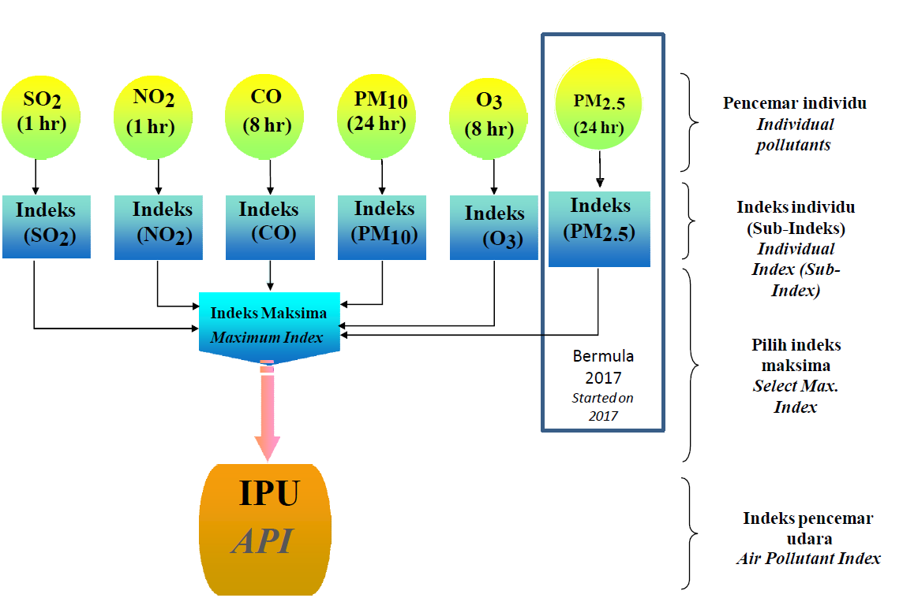

What is Air Quality Index?
An air quality index (AQI) is used by government agencies to communicate to the public how polluted the air currently is or how polluted it is forecast to become. AQI information is obtained by averaging readings from an air quality sensor, which can increase due to vehicle traffic, forest fires, or anything that can increase air pollution. Pollutants tested include particulates, ozone, nitrogen dioxide, carbon monoxide, sulphur dioxide, among others.
Public health risks increase as the AQI rises, especially affecting children, the elderly, and individuals with respiratory or cardiovascular issues. During these times, governmental bodies generally encourage people to reduce physical activity outdoors, or even avoid going out altogether. The use of face masks such as cloth masks may also be recommended.
Source: Wikipedia
Air Quality Index in Malaysia
The Malaysian Air Pollution Index (API) calculation is based on Pollution Standard Index (PSI) that has been accepted at the international level by United States Environmental Protection Agency (USEPA)
The measurement of 6 Pollutant Parameters are:
- Sulphur Dioxide
- Particular Matter (PM10)
- Particular Matter (PM2.5)
- Ozone
- Nitrogen Dioxide
- Carbon Monoxide
API readings are determined by the concentration of particulate matter that is the dominant pollutant most of the time especially during haze in Malaysia, as allustrated in the following diagram:
Air Pollutant Index: Impact on Health
| Air Pollutant Index (API) | Status | Health Effect | Health Advice |
|---|---|---|---|
| 0 - 50 | Good | Low pollution without any bad effect on health. | No restriction for outdoor activities to the public. Maintain healthy lifestyle. |
| 51 - 100 | Moderate | Moderate pollution that does not pose any bad effect on health | |
| 101 - 200 | Unhealthy (for sensitive group) | Worsen the health condition for elderly, pregnant woman, children and people who is with heart and lung complications. | Limited outdoor activities for the high risk people. |
| 201 - 300 | Very Unhealthy | Worsen the health condition and low tolerance of physical exercises to people with heart and lung complications. Affect public health. | Old and high risk people are advised to stay indoor and reduce physical activities. People with health complications are advised to see doctor. |
| 301 - 500 | Hazardous | Hazardous to high risk people and public health. | Old and high risk people are prohibited for outdoor activities. Public are advised to prevent from outdoor activities. |
| > 500 | Emergency | Hazardous to high risk people and public health. | Public are advised to follow orders from National Security Council and always follow the announcement in mass media. |